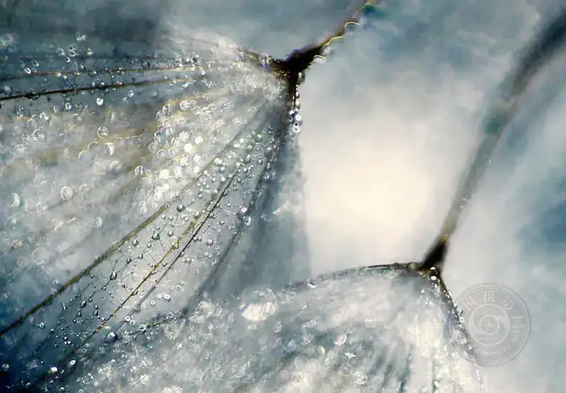
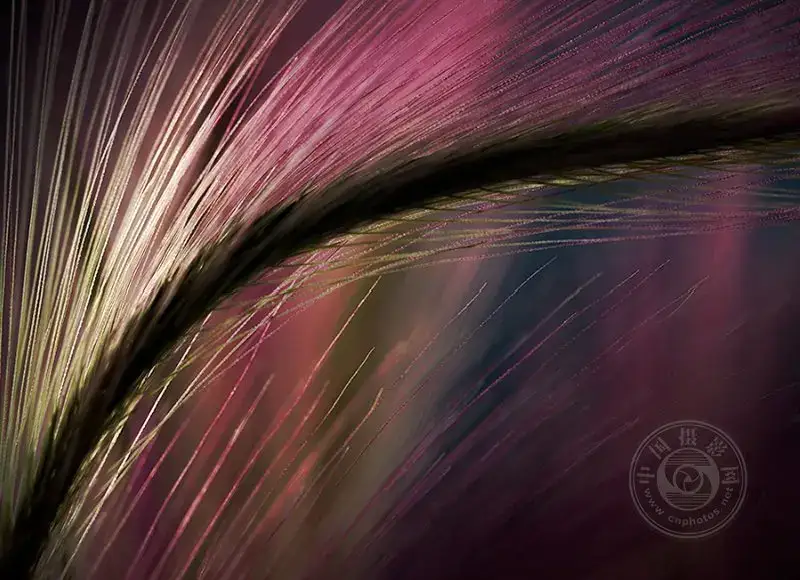
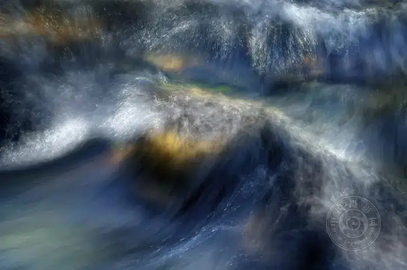
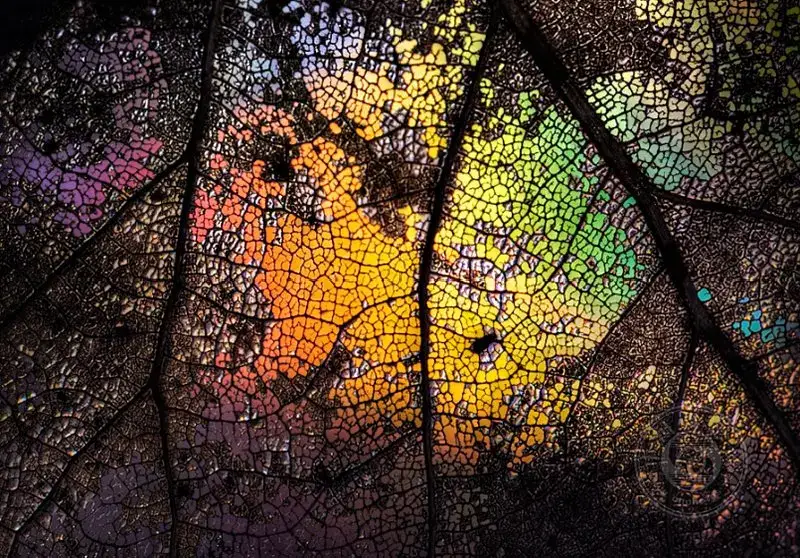
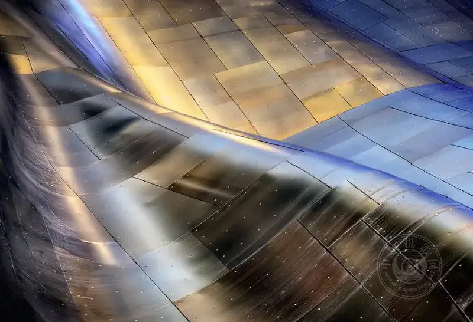

Do not make it sound too mysterious.
Abstract photography sounds high-end. The results look like oil paintings. Hang them on a white gallery wall, and everyone stops for three seconds. But the entry bar is not as high as you think. If you take out your phone and crouch by the road to shoot a puddle, with a blurry, weird reflection, that also counts as abstract photography.
Its core is one sentence. Do not let people tell at a glance what you shot.
It is that simple. Anyone can shoot a flower. But if you only shoot the curled edge of a petal, with light coming through from behind, red and half transparent, no one knows if it is a petal or colored glass. Then it gets interesting.
Below are the mistakes I made and the wins I found. This is pure field experience, and every point was paid for with bad shots.
Rule one: move the lens in close. Do not be shy.
If you shoot a stone from two meters away, it is just a stone. Get to five centimeters, and the pits on its surface, the ridges of light and shade, and the flecks of quartz that catch the light all show. The stone is still the same stone, but it now looks like a photo sent back by a Mars rover.
Phone users can turn on macro mode. If you do not have macro, move in by hand to the closest focus distance and stop. Shift back and forth to find focus. Camera users on a budget can buy a close-up lens. It costs a few dozen yuan, and once it is on, your focus distance drops to something like an ant face to face. After you shoot, play it back. If you pause for a second and wonder what on earth this is, then congratulations, you have done it.

©Ursula Abresch
Rule two: check the light before you shoot.
There is a corny but true saying: photography is all about playing with light. Abstract photography is even more like this. Your frame has no faces, no buildings, no mountains to distract the eye. The quality of the light decides whether the image looks refined or cheap.
Build a habit. When you raise the camera, do not rush to press the shutter. Spend two seconds scanning where the brightest spot and the darkest spot are. Are the highlights blown out white like an overexposed shot? Cut exposure by a stop. Are the shadows so black that you cannot see anything? Add some light or change the angle. Once this habit forms, your rate of bad shots can drop by half.

©Ursula Abresch
Rule three: you do not need to look for subjects. Look down and they are there.
Every day on your commute, you walk past at least a hundred abstract subjects.
The wrinkled rubber bellows at the joint of a subway car. Is it not strongly geometric? The oily sheen on the ground after rain, in a dozen colors, is a ready-made abstract painting. The fire hydrant at the end of an office corridor. Shoot it from straight above. You would not believe how that red disk pops against the gray floor.
When you leave home, keep the thought of finding something interesting in mind. Walk a little slower and let your gaze drop. You will find that this city is full of free visual material. You simply had not looked at it before.

©Ursula Abresch
Rule four: do not leave the flash stuck on the camera.
Many people buy a flash and leave it on the hot shoe forever. Try raising your hand and firing the light from the side. It is nothing like firing it straight down from above. Side light makes the bumps on a surface stand out, and the texture pops out one thread at a time. Flat light looks flat. Side light looks three-dimensional. That is the whole difference.
When you shoot up close, do not skimp on a tripod. You do not know how much camera shake shows up close. Even a light breath can blur the whole frame. Buy a small desktop tripod that weighs a few dozen grams and keeps it in your bag. The time you save is all the time you would otherwise spend deleting bad shots in post.

©Ursula Abresch
Rule five: just fiddle with the settings and go.
The best part of abstract photography is that there is no client, no standard, and you are the boss.
Want to set the white balance wrong on purpose? Go ahead. In normal daylight, set it to tungsten mode. The frame turns cold and blue, and the water looks like a glacier. The effect is striking. Underexpose by a stop or two? The dark mood rises right up, and you barely need to touch it in post.
A shot costs nothing, so take one at a setting, change it, and take another, then pick later at home. The settings you thought you got wrong may turn out to be the ones that produce the keeper.
©Ursula Abresch
Rule six: rotating and cropping is magic.
Do not skip the post step. Try rotating the photo 180 degrees. What you thought was the ground now looks like the sky. The viewer's brain cannot keep up. That moment of confusion is the beauty of abstract photography.
Cropping is even sharper. Sometimes a photo is plain, but if you cut a small corner and enlarge it, it suddenly looks like a complete work of modern art. Remember: it is not that you shot it badly, it is that you framed too much. Cut boldly, cut without mercy, and leave only the part you really want in the frame.

©Ursula Abresch
A few last words:
Abstract photography does not require new gear, a trip far away, or deep theory. It only asks you to go a little slower, a little closer, and try a few more times.
On your commute this week, pick one thing. A tree trunk, a floor tile, an old wall. Shoot it every day as you pass, and change the angle, the light, and the settings. After a week, you will find that one thing can look seven completely different ways.
That is what abstract photography gives you. You see more, even when you walk the same road.